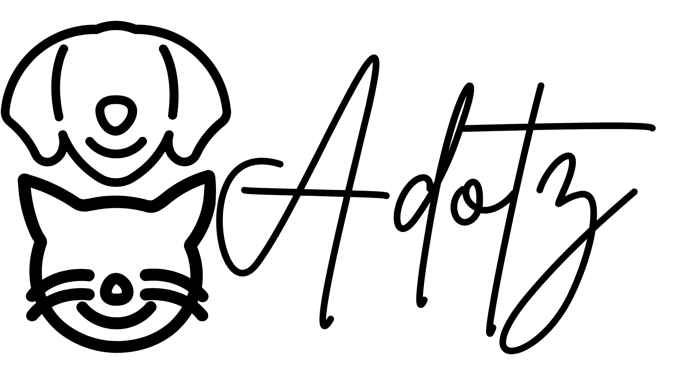

Quem Somos Nós
A Adoltz é uma organização sem fins lucrativos dedicada à proteção animal. Trabalhamos para resgatar, tratar e encontrar um lar seguro para animais em situação de abandono.
Nosso objetivo é conscientizar a comunidade sobre a importância da adoção responsável, castração e respeito aos direitos dos animais.